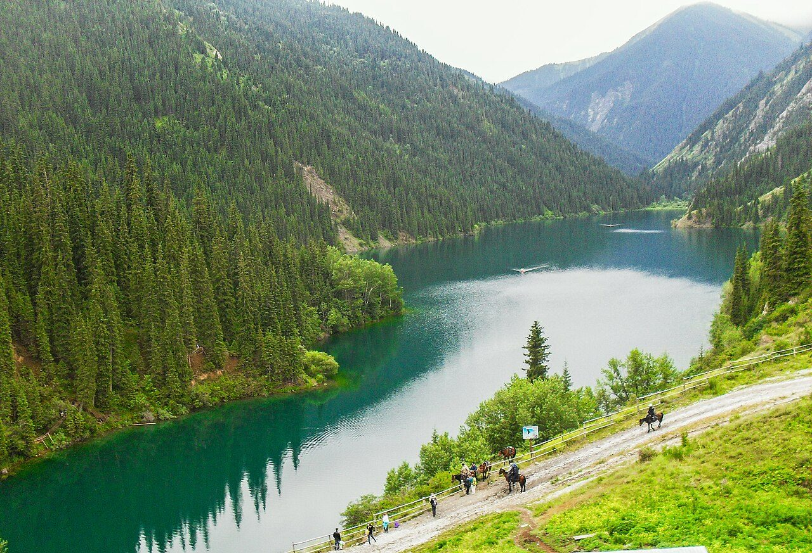
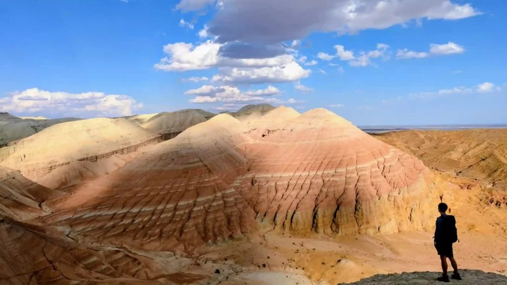
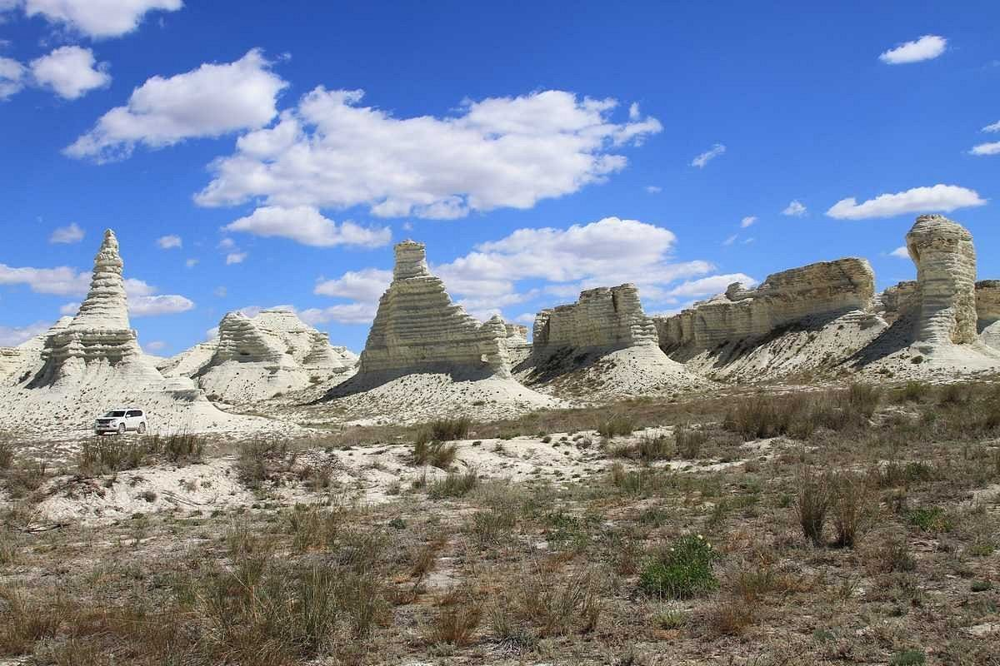
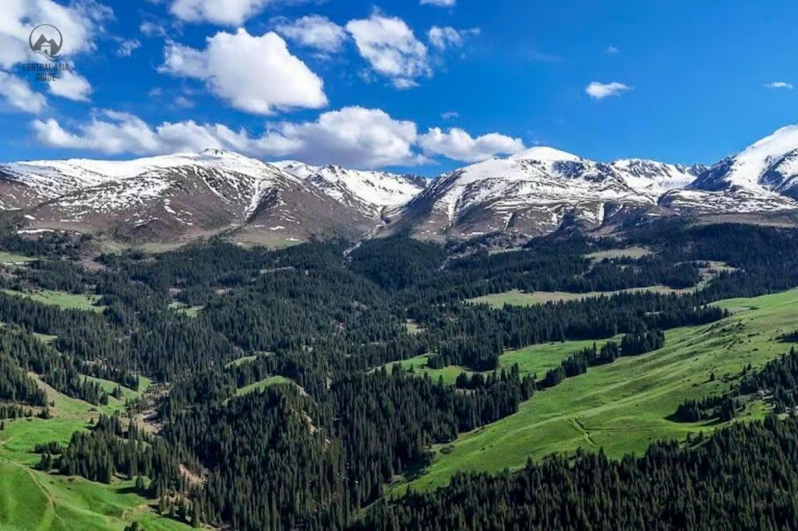

West
WestMangystau
White cliffs, desert plateaus and surreal rock formations around Bozzhyra.

Use this regional guide to understand where each hidden place belongs and what kind of scenery to expect.
From western chalk cliffs to eastern alpine lakes, every region has a different travel mood.
WestWhite cliffs, desert plateaus and surreal rock formations around Bozzhyra.
Alpine lakes, gorges and canyons including Kolsay, Kaindy and Charyn.
 Central
CentralGranite mountains, steppe horizons and the unusual Bektau-Ata oasis.

South-EastNational parks, dry valleys and the famous Singing Dune of Altyn Emel.
 North-East
North-EastForest, lakes and rounded mountains in the Bayanaul National Park area.

WestOpen steppe and rare chalk formations that feel almost otherworldly.
 East
EastAltai valleys, rivers and mountain forests around the vast Katon-Karagay National Park.

SouthWestern Tien Shan valleys, rivers and mountain routes in Sairam-Ugam National Park.
Three very different landscapes, connected by one journey.
Mangystau's white limestone world.
Clear alpine water among pine forests.
Lakes and mountains in the north-east.
| Region | Destination | Landscape | Best season |
|---|---|---|---|
| Almaty Region | Kolsay Lakes | Lakes | June–September |
| Mangystau Region | Bozzhyra | Canyons | April–June |
| Almaty Region | Charyn Canyon | Canyons | April–June |
| Almaty Region | Kaindy Lake | Lakes | June–September |
| Karaganda Region | Bektau-Ata | Mountains | May–September |
| Jetisu Region | Altyn Emel | Park | April–June |
| Pavlodar Region | Bayanaul | Lakes | June–August |
| Karaganda Region | Karkaraly | Mountains | May–September |
| Almaty Region | Turgen Gorge | Park | May–October |
| Atyrau Region | Akkergeshen | Canyons | April–June |
| Almaty Region | Big Almaty Lake | Lakes | June–October |
| Almaty Region | Issyk Lake | Lakes | May–September |
| East Kazakhstan Region | Katon-Karagay | Park | June–September |
| Turkistan Region | Sairam-Ugam | Mountains | May–October |
| Mangystau Region | Ustyurt Plateau | Desert | April–May |